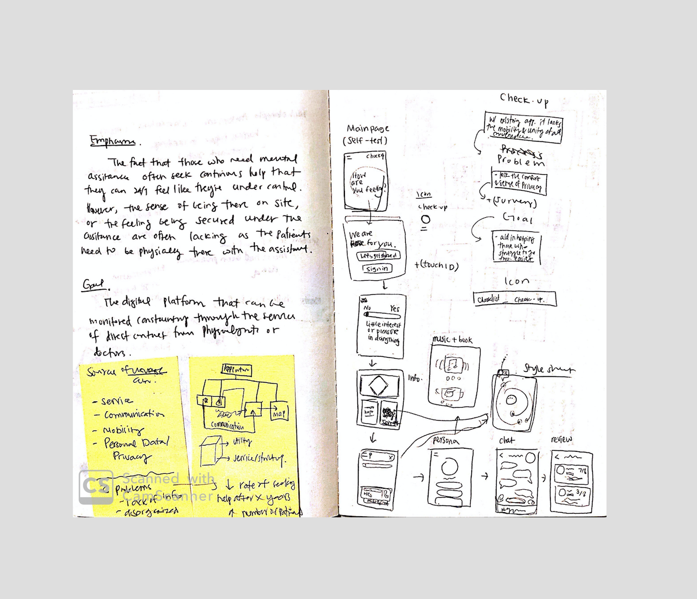
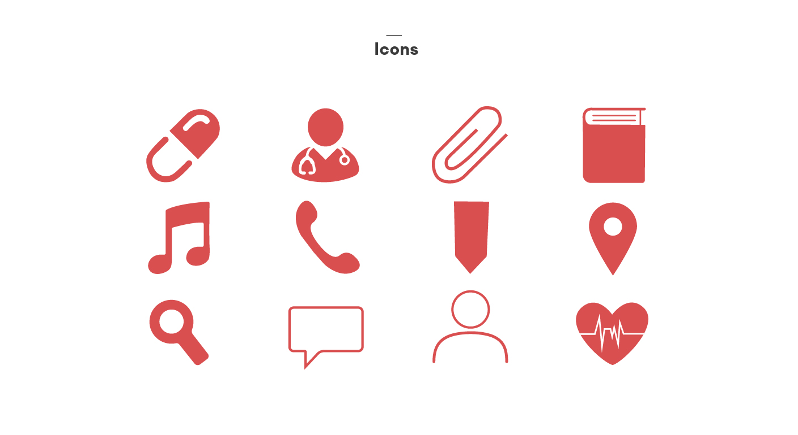
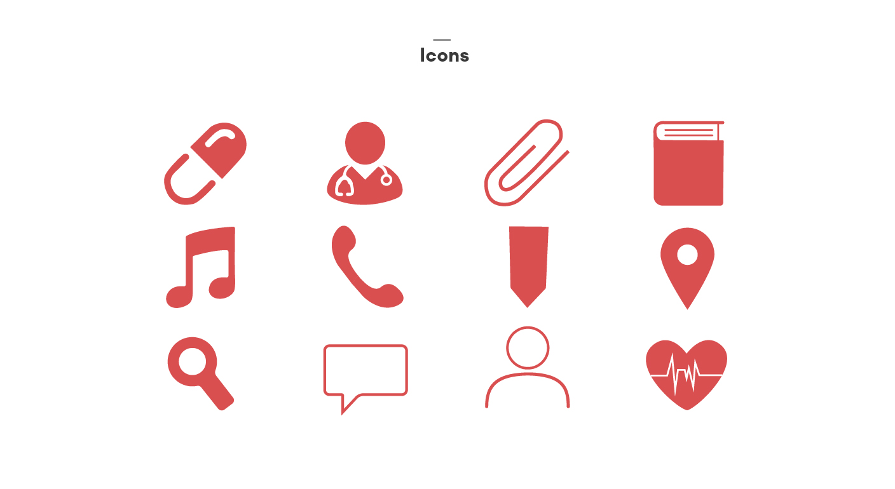
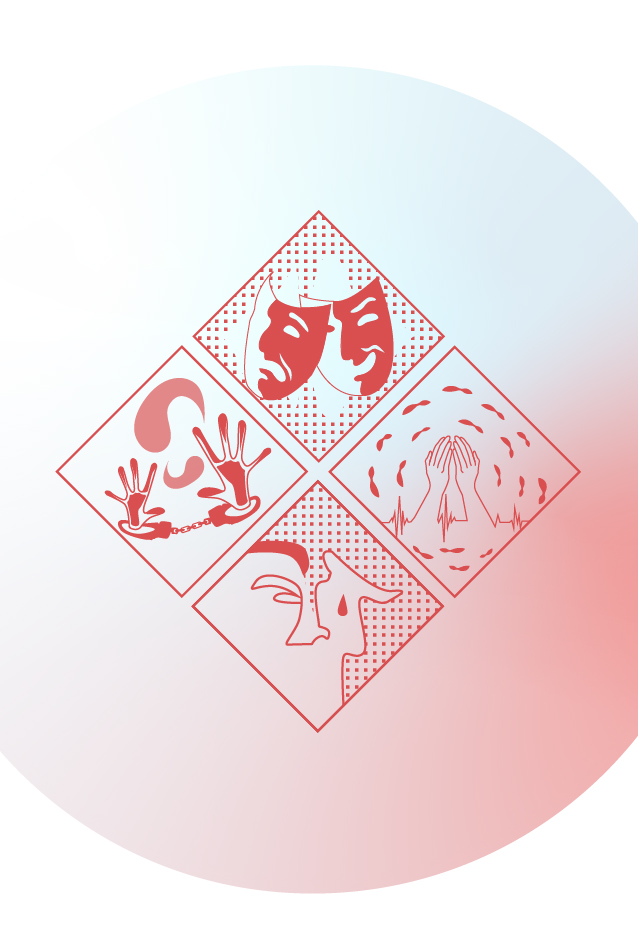
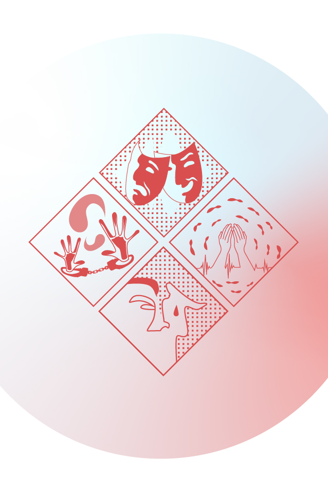
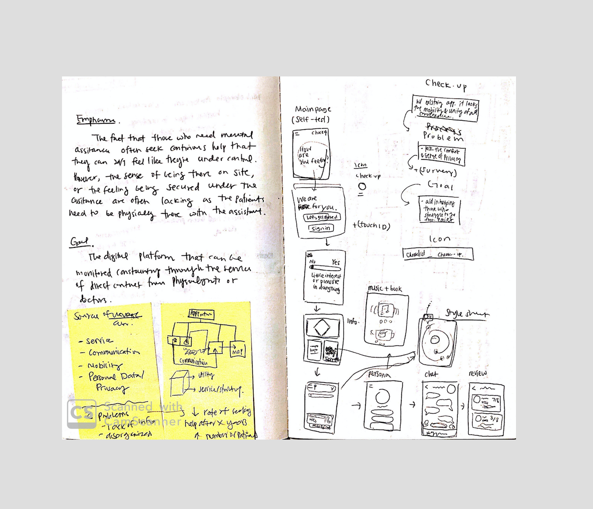
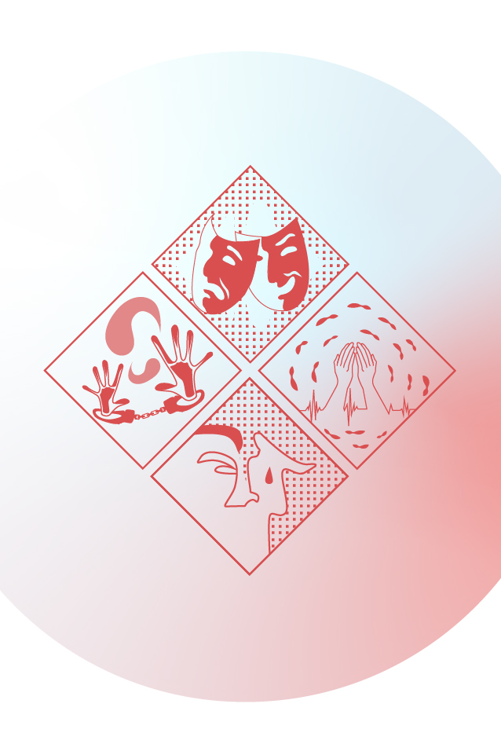

CHECKUP
2018
People who experience mental disorders often do not receive enough support to lessen the pain they go through. Most notably, selected have responded that their closest companions, families, or friends are unaware of the fact that the person has a mental illness. The personal checkup app enables the patients to communicate with doctors, therapists, and other patients directly, it helps the process more convenient. Especially for those who suffer social interaction with the outside world, they can easily set up appointments and service through this app.
UI/UX Design
IDEATION


PROBLEM
In such fast-changing society, it became common to experience mental disorders frequently as people including celebrities encounter in a lot of social situations. In many cases, they do not receive adequate treatment, miss the Golden Time and fall into chronic mental illness. The lack of information and inconvenience of seeking help cause the patients to hide their feelings and emotions. A continous treatment is needed to lessen the pain.
 



GOAL
The app aims to provide a better understanding of what the disease is about and make the treatment process go more efficient. For those who are hestitant to share or unaware of their situations, this app will help them by securing personal information. With social interaction with other patients around, Checkup encourages to help each others.


SERVICE
Through several self-tests and various reviews, the app aims to find the treatment that works best for you. The one-on-one chat service enables real-time equivalents with dedicated doctors and emergency situations, and creates an environment that encourages energy through communication with patients in the immediate area. The entertainment element enables to share freely the recommended playlists and books from professionals or those who share similar mental diorders.
 

* exhibited at 2018 Korean Design Exhibtion
People who experience mental disorders often do not receive enough support to lessen the pain they go through. Most notably, selected have responded that their closest companions, families, or friends are unaware of the fact that the person has a mental illness. The personal checkup app enables the patients to communicate with doctors, therapists, and other patients directly, it helps the process more convenient. Especially for those who suffer social interaction with the outside world, they can easily set up appointments and service through this app.
UI/UX Design

